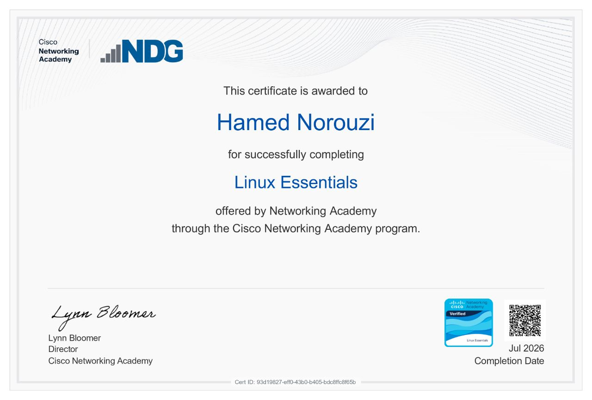
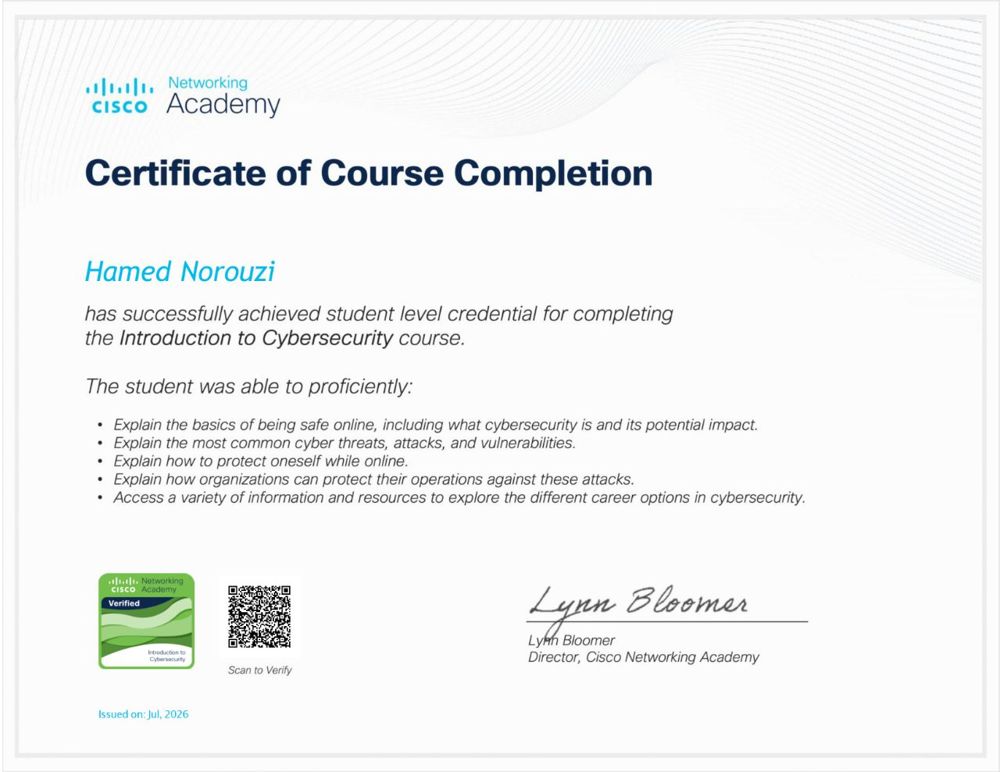

کارشناس فناوری اطلاعات (IT)
بیمارستان سوم شعبان تهرانتیر ۱۴۰۴ — آذر ۱۴۰۴
- پشتیبانی شبکه و سیستمهای بیمارستان با بیش از ۲۰۰ کاربر
- کاهش ۳۰٪ زمان پاسخگویی به تیکتهای پشتیبانی
- مدیریت پچهای امنیتی و بروزرسانی سرورها
تیر ۱۴۰۴ — آذر ۱۴۰۴تهران
کارشناس ارشد نرمافزار | مرکز عملیات امنیت (SOC)
دانشجوی کارشناسی ارشد مهندسی کامپیوتر گرایش نرمافزار؛ علاقهمند به زیرساخت شبکه، امنیت و مسیر حرفهای SOC. این سایت خلاصهای از مسیر تحصیلی، سوابق کاری و فعالیتهای حرفهای من است.

مهندسی کامپیوتر - گرایش نرمافزار
مهندسی کامپیوتر

Networking Development Group (NDG)

Cisco Networking Academy

نویسنده: حامد نوروزی
کتابی درباره نقش رهبری، تفکر مدیریتی و هدایت تیم در محیط مهندسی نرمافزار.
خرید آنلاین کتاب↗برای همکاری، فرصت شغلی، پروژه یا یک گفتوگوی فنی میتوانید با من در ارتباط باشید.